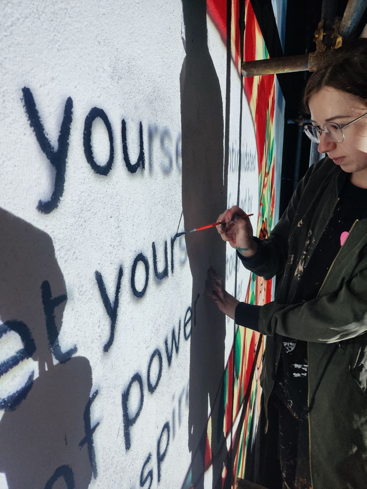
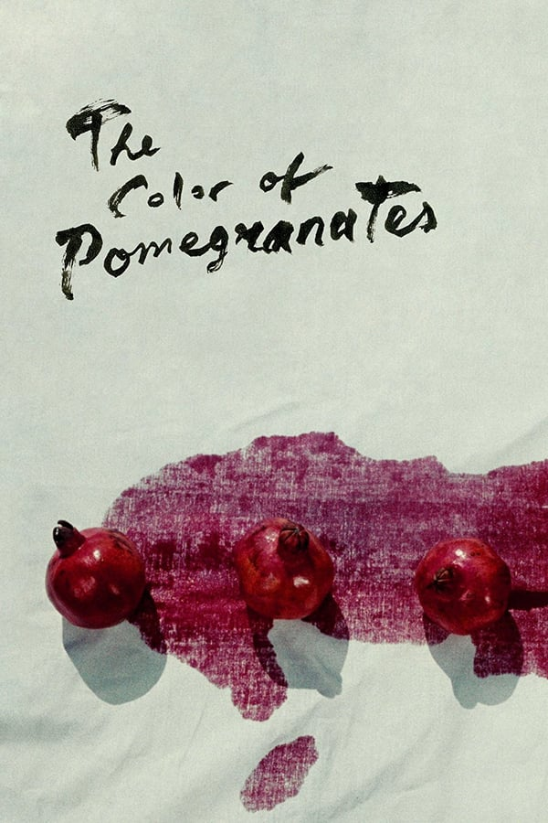

Этот мурал был придуман и реализован в 2024 году группой релокантов, которые не остались равнодушными к событиям, происходящим в Российской Федерации. Они решили оставить память об Алексее Навальном в тихом маленьком горном городке под названием Дилижан. Дилижан приютил большое количество как политически несогласных, так и просто людей, которые боялись за свою жизнь и жизнь своих близких. Армения, как страна великолепного гостеприимства, дала этим людям кров и защиту. Сам портрет был взят из видео клипа, созданного в память Алексею группой музыкантов и культурных деятелей, которые также были вынуждены разъехаться.
Духу не помеха четыре стены
Память не засыпать холодной землёй
Раз не существует источников тьмы
Значит, этот свет всё заполнит собой
И его лучи отражаются в нас —
Им благодаря мы друг другу видны
Выходить из тьмы — это больно для глаз
Но нет варианта не выйти из тьмы
Объединяя память о Навальном с образом граната мы проводим параллель между страданиями невинно казненных в российских тюрьмах и страданиями невинно убиенных в геноциде армян, стирая границы и показывая, что эффект от несправедливости любой власти не имеет временных и территориальных рамок. Также гранатовое дерево напоминает о великом произведении Сергея Параджанова "Цвет Граната", рассказывающем о великом Армянском поэте Саят Нове

Художник – Влада MV Picture(inst).
Влада - стрит-арт художник из Санкт-Петербурга, на данный момент является политической беженкой из-за давления силовых органов (художница активно выражала свою гражданскую позицию и делала антивоенные высказывания). Сейчас живет в Армении.
Цитата «Навальный был не просто оппозиционным политиком, но для большинства людей, которые его поддерживали, был символом честности, гражданской солидарности, активной гражданской позиции, единства и надежды на прекрасную России будущего. Люди, которые сочувствовали Навальному разделяли общие ценности: искренность, открытость, отвественность. В какой-то момент я поняла, что отношение к этой личности стало для меня показателем человечности. Когда я работала в госструктуре я своими глазами видела, как люди плакали из-за смерти Навального на работе. Кто-то уволился. Людей, которые сочувствовали Навальному в России очень много, было и осталось, он стал поводом для людей объединится вокруг представления о лучшем будущем для своей станы, мы все хотели освобождение политзаключенных, искоренения коррупции, прозрачной политика, направленной на улучшение качества жизни каждого человека в России, это может хотеть только настоящий патриот. Пока Алексей сидел в тюрьме он обратился к Вере в Бога за счет чего стал еще ближе к «глубинному народу». На своем последнем слове в суде по очередному фабрикованному делу он сказал: «Сила в правде… Несмотря на то, что страна наша построена на несправедливости, и мы постоянно сталкиваемся с несправедливостью, худший вид несправедливости — это несправедливость вооруженная. Но тем не менее, мы видим, что одновременно с этим десятки миллионов людей хотят правды, хотят добиться правды, и рано или поздно они ее добьются, они насытятся.»
Процесс создания
История Навального
Алексей Анатольевич Навальный (4 июня 1976, Бутынь, Московская область, СССР, РСФСР — 16 февраля 2024, исправительная колония «Полярный волк», Харп, Ямало-Ненецкий автономный округ, Россия) — российский политический и общественный деятель, юрист и видеоблогер,
один из наиболее известных оппозиционных политиков в России.
Ключевые моменты его деятельности:
Основал Фонд борьбы с коррупцией.
Участвовал в различных политических кампаниях.
Был отравлен и заключен.
Смерть:
Алексей Навальный скончался 16 февраля 2024 года в исправительной колонии особого режима «Полярный волк». Официальной причиной смерти, согласно сообщению ФСИН, стал оторвавшийся тромб. Однако многие оппозиционеры и международные организации выразили сомнения в официальной версии и предположили, что смерть могла быть насильственной. Точные обстоятельства смерти до сих пор остаются предметом споров и расследований.
Смерть Навального вызвала широкий международный резонанс и новые волны протестов в России. Официальные власти России не проводили независимого расследования причин смерти. Семья и соратники Навального неоднократно заявляли о необходимости международного расследования.
Роль граната в истории Армении
Почему гранат?
Символ жизни и плодородия: Гранат, наполненный сочными зернами, ассоциируется с жизнью, рождением и продолжением рода. В фильмах Параджанова он часто становится метафорой творчества, вдохновения и плодотворности.
Единство многообразия: Множество зерен внутри граната символизируют единство в многообразии, гармонию противоположностей. Этот образ отражает парадоксальность мира и человека, где соединены свет и тьма, жизнь и смерть.
Связь с армянской культурой: Гранат – важный символ в армянской культуре, связанный с мифологией, религией и повседневной жизнью. Для Параджанова, армянина по происхождению, этот фрукт имел особое значение.
В фильмах Параджанова
"Цвет граната": В этом культовом фильме гранат становится центральным образом, олицетворяющим жизнь и творчество армянского поэта Саят-Новы. Его кровь сравнивается с соком граната, а поэзия – с раскрывающимся плодом.
Образ граната встречается и в других работах Параджанова, хотя и в меньшей степени. Он всегда несет в себе глубокий символический смысл, связанный с темами любви, смерти, творчества и национальной идентичности.

Значение для творчества Параджанова
Синтез искусств: Через образ граната Параджанов соединял живопись, поэзию, музыку и кино. Он создавал на экране настоящие произведения искусства, где каждый кадр – это поэма.
Поиск национальной идентичности: Обращаясь к армянским мифам и символам, Параджанов искал корни национальной культуры и утверждал уникальность армянского искусства.
Универсальность символа: Несмотря на глубокую связь с армянской культурой, образ граната имеет универсальное значение. Он затрагивает вечные вопросы бытия, творчества и человеческой души.